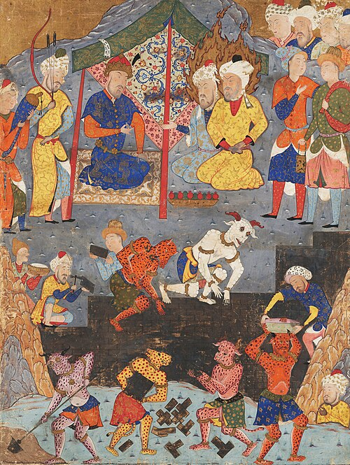

بِسْمِ اللهِ الرَّحْمَٰنِ الرَّحِيمِ
A Book of Wonders · Entry the Sixth
Yaʾjūj wa-Maʾjūj - Gog and Magog
يَأْجُوجُ وَمَأْجُوجُ

Physical Description
Yaʾjūj wa-Maʾjūj are human in nature. They are a nation, with their own societies and communities. They are described as having broad faces, small eyes, reddish-black hair, and faces like hammered shields. They are known to be a very mischievous nation. (ʿArīfī, The End of the World, p. 366.)
Lore & Significance
Gog and Magog are the third sign of the end times. Dhū al-Qarnayn, a mighty king, was asked to build a wall to stop their mischievousness. He constructed a great wall of steel and copper between two mountains, sealing them in. Yajuj-wa-Majuj dig at the wall constantly and get very close to breaking it, at which they will say: "We'll continue destroying the wall tommorow." However, God replenishes the wall every night until the appointed time comes, when God gives them the ability to say "We'll continue destroying the wall tommorow inshā Allāh," at which the wall will remain as it was the previous day and they will break through. (ʿArīfī, The End of the World, p. 370.) Their failure and eventual victory in breaking the wall are important in the narrative because they represent the idea that even those who are not Muslim are subject to the will of God. It is only Allah (The most glorified, the most high) who can give permission to do things, and without it, we are powerless.
After Prophet Isa (peace be upon him) slays the Dajjāl, Yajuj-wa-Majuj will be released and ravage the earth. They will drink all the water on the earth and kill everyone in their way. Even Prophet ʿĪsā (peace be upon him) and the believers will have to go into hiding, suffering great hunger and exhaustion. However, this is not an act of weakness on the believers. It shows Muslims that even the strongest believers must protect themselves from harm and should never give up hope because Allah SWT will always protect them.
Yaʾjūj wa-Maʾjūj will proceed to kill everyone on earth except those in hiding, and then turn to the sky and shoot their arrows upward, which come back stained with blood. They will say "We have defeated the people of earth and dominated the people of heaven." (ʿArīfī, The End of the World, pp. 380–381.) They believe they will have killed those in heaven, which is when God will then send a worm that kills them all. Birds will clean them up, rain will wash the earth, and the world will be rid of them. After their destruction, the world will be peaceful; there will be no more fighting or war. (ʿArīfī, The End of the World, p. 383.) The arrogance of Yaʾjūj wa-Maʾjūj in their act of shooting at the heavens is the ultimate expression of human hubris: no one can harm, much less kill, those in heaven except through Allah's command. Much like those who are arrogant in their ways, Yajuj-wa-Majuj will think that they have won, but they have ultimately failed.
Yajuj-wa-Majuj are also very important in eschatology due to their role in the afterlife. According to the Prophet Muhammad (peace be upon him), when Allah SWT made humans, he made them into two categories: nine parts Yajuj-wa-Majuj and one part mankind. And for every thousand people who enter hell, nine hundred and ninety-nine will be from Yaʾjūj wa-Maʾjūj, and one from the rest of mankind. Their narrative provides a sense of support and reassurance to believers, showing that the scale of divine judgment falls on the oppressors, not the faithful. (ʿArīfī, The End of the World, pp. 366–369.)